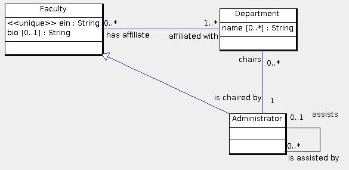

Faculty are affiliated with departments. Every faculty person must be affiliated with at least one department. A department may have names. Faculty are identified by their ein (Employee Identification Number). A faculty person may have a bio (biographical sketch). Some faculty are administrators, such as a department chair, provost or president. Every administrator is a faculty member. An administrator may have assistants who are also administrators. An administrator may assist at most one other administrator. Every department has exactly one chair who can be the chair of several departments.
Here is the data model:

Here is the data model translated to SQL:
create table Faculty(
id int primary key,
ein int not null unique,
bio varchar(5000) /* Optional biographical sketch */
);
create table Administrator(
id int primary key references Faculty(id) on delete cascade on update cascade,
/* This is a subclass, so deleting the superclass object must also delete the subclass object. */
assists int references Administrator(id) on delete set null on update cascade
/* Optionally may assist another administrator. */
/* If the administrator record is deleted, then set the relationship to null
since the faculty person is no longer assisting an administrator. */
);
create table Department(
id int primary key,
chairs int not null references Administrator(id) on update cascade on delete no action
/* If the administrator is deleted, the department should not cease to exist,
so the request is rejected. An administrator can be deleted only if
the department is given a new chair. */
);
create table Affiliation(
affiliatedWith int references Department(id) on delete cascade on update cascade,
hasAffiliate int references Faculty(id) on delete cascade on update cascade,
/* If either the faculty or department is deleted, then the relationship between them is also deleted. */
primary key(hasAffiliate, affiliatedWith)
);
create table DepartmentName( /* Multi-valued attribute names of department */
department int references Department(id) on delete cascade on update cascade,
/* If the department is deleted, then its names are also deleted. */
name varchar(255),
primary key(department, name)
);
/* The following enforces the 1..* multiplicity of the Affiliation association.
However, it is not required that this constraint be enforced by the DBMS.
Note that delete is not cascaded because Faculty is not dependent.
The update is not cascaded because the operation is not well defined.
*/
alter table Faculty
add foreign key(id) references Affiliation(hasAffiliate)
on update no action on delete no action;
© 2011 Ken Baclawski. All rights reserved. Redistribution and use in source and binary forms, with or without modification, are permitted provided that redistributions and uses retain this copyright notice.